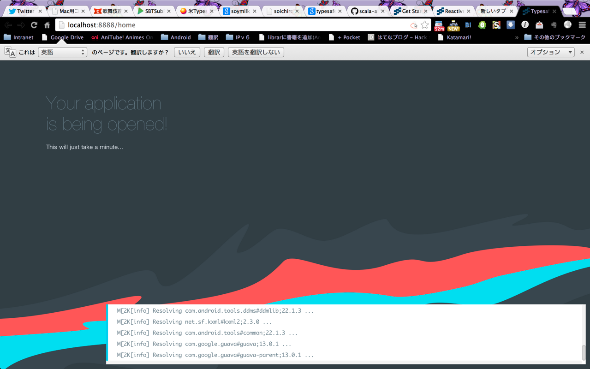
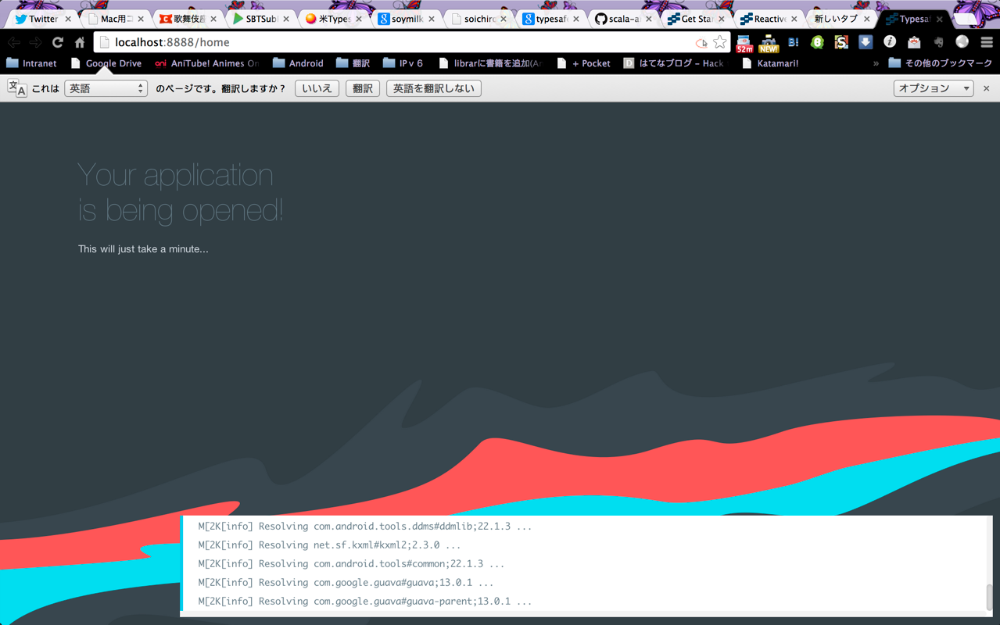

typesafe activator
本日参加してきた、歌舞伎座.tech#1 にて、Typesafe Activator が、giter8を置き換えるものだ！（誇張あり) と聞いたので、調べて見ました。
Typesafe Activator とは
Typesafe Activator とは、Typesafe社の提供するRactive Platformのテンプレートを取得し、 即座に開発に着手するための、ツールです。
Reactive Platformとは
以下の特性をもつアプリケーションを指します。
- Resilient
- Interactive
- Scalable
- Event-Driven
Typesafe Activatorの導入
※面倒くさいので、以下TAと略します。
導入は非常に簡単で、以下のURLを開いて、「Download Typesafe Activator」をクリックして、ダウンロード http://typesafe.com/platform/getstarted
activator (Windowsなら、activator.bat)を叩くだけで利用できます。
 

TAは、GUIとCUIの両方から使えるようです。 GUIも簡単なのですが、CUIも結構簡単でした。
TABキーで、テンプレートの一覧が参照可能です。
/Users/miyabi% activator new
Enter an application name
> tryta
The new application will be created in /Users/miyabi/scaroidtest
Enter a template name, or hit tab to see a list of possible templates
>
activator-akka-cassandra activator-akka-spray activator-play-autosource-reactivemongo akka-clustering
akka-distributed-workers akka-distributed-workers-java akka-java-spring akka-scala-spring
akka-supervision angular-seed-play atomic-scala-examples hello-akka
hello-play hello-play-java hello-scala hello-scaloid
hello-slick macwire-activator matthiasn-sse-chat-template play-guice
play-hbase play-java-spring play-mongo-knockout play-slick
play-spring-data-jpa play-with-angular-requirejs reactive-stocks realtime-search
scalikejdbc-activator-template six-minute-apps tcp-async test-patterns-scala
>
その他
AndroidをScalaで開発したかったので、「hello-scaloid」を選んでみましたが、 どうやら、android-8のテンプレートらしいので、だいぶ古いですね。
まだ、1.0.0が出たばかりなので、テンプレートが拡充されてき次第、また再度チャレンジしてみます。
比較
これまでは、Conscript + giter8を使っていたのですが、 Conscriptちゃんが、弊社環境では入れられないということもあり、 無条件でTypesafe Activatorを取り入れたいと思います。
と、その前に会社で試してみますので、後日をお楽しみに